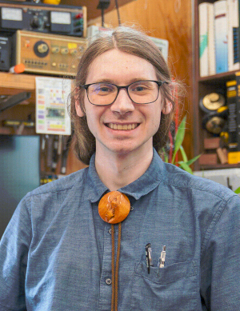

I've put this site up to share some useful (I hope...) resources for others looking to learn about robotics.
Technically, I currently get paid to do robotics research as a PhD candidate at MIT CSAIL, but I hope and aim to always be an amateur --- someone who does something ``for the love of it''. If I stop liking robots, I will stop building them. I don't see that being any time soon.